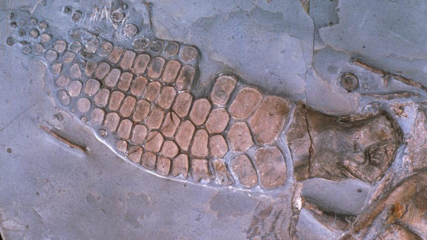

The ichthyosaur is not actually a dinosaur, but is in fact a large aquatic lizard, where the name literally translates to “fish-lizard” in Greek. It changed morphologically over its presence on earth. At the beginning of its appearance, it was much more similar to a lizard, and over time it evolved to resemble a fish, and eventually gained a dorsal fin.
The ichthyosaur had a large range of morphologies, with most being within 2 to 4 meters in length , but there are some exceptions. One fossil found in the UK records an ichthyosaur that was 26 meters long, which is around the same size as a blue whale, one of the largest animals to live on earth. Those around 2 meters weighed around 165 kg, while those that reached up to 4 meters could weight up to almost a tonne at approximately 940 kg.
Ichthyosaurs had a long and narrow skull with sharp teeth that allowed for them to be successful predators. They also had large eyes that could be up to 10 inches in diameter, which would be the largest eyes recorded in history. After finding a fossil with preserved skin, researchers concluded that the ichthyosaur had darker skin on their backs and lighter skin on their bellies. This colour pattern, referred to as countershading, is similar to modern marine animals which use this patterning to help to regulate body temperature.